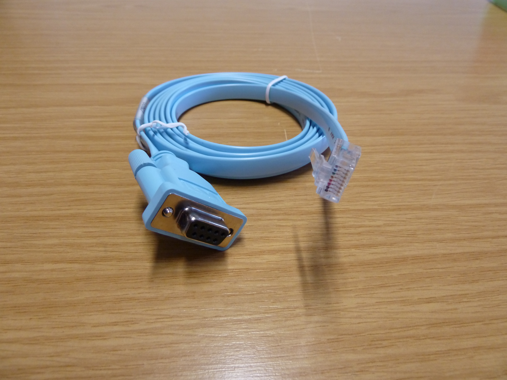
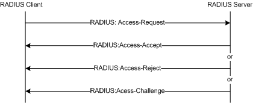

Unit 2: Network Fundamentals — Lesson 11 / 11 (Completed)الوحدة الثانية: أساسيات الشبكات — الدرس 11 من 11 (مكتمل)
User Mode and Privileged Mode Security
Securing Cisco console, enable mode, password encryption types, secrets, and AAAتأمين أوضاع سيسكو: حماية الكونسول، كلمات مرور التمكين، أنواع التشفير، وخوادم AAA
Quick recap quizاختبار مراجعة سريع
User Mode Security (Protecting the Console)أمان وضع المستخدم (حماية منفذ الكونسول)
SOURCE MATERIALالنص الأصلي من المرجع
In this lesson, we examine how to secure User Mode (User EXEC) and Privileged Mode (Enable Mode) on Cisco switches and routers. By default, out of the box, Cisco IOS devices have no authentication required. When you plug a console cable into a brand-new device, here is what happens:
في هذا الدرس، سنتعلم كيفية تأمين وضع المستخدم (User EXEC) ووضع التمكين (Enable Mode) على أجهزة سيسكو. بشكل افتراضي، عند تشغيل جهاز سيسكو جديد من المصنع، لا توجد أي مصادقة مطلوبة. بمجرد توصيل كابل الكونسول بالجهاز، هذا ما يحدث مباشرة:
Switch con0 is now available
Press RETURN to get started.
Switch>
Once you press the Enter (RETURN) key, you end up directly in User EXEC mode (
Switch>) without any password. Anyone with physical access can immediately view basic switch data and interfaces. To prevent unauthorized physical access, we must configure authentication on the console port.بمجرد الضغط على زر Enter، تدخل مباشرة إلى وضع المستخدم (
Switch>) دون طلب أي كلمة مرور. هذا يعني أن أي شخص يصل فيزيائياً للجهاز يمكنه رؤية معلومات الشبكة. لمنع هذا الوصول غير المصرح به، يجب تفعيل المصادقة على منفذ الكونسول.
🖼️ Cisco Console Cable
1. Simple Shared Password
The simplest option to protect the console is to configure a single shared password under the console line settings:1. كلمة مرور مشتركة بسيطة (Simple Password)
أبسط طريقة لحماية الكونسول هي تعيين كلمة مرور واحدة مشتركة تحت إعدادات خط الكونسول:Switch# configure terminal
Switch(config)# line console 0
Switch(config-line)# password cisco
Switch(config-line)# login
Switch(config-line)# exit
The Critical 'login' Command: Notice the
login command above! In Cisco IOS, simply typing password cisco is not enough. The login command explicitly instructs Cisco IOS to prompt users for this password when establishing a session. If you forget login, IOS will not ask for any password!أهمية أمر login الحاسم: لاحظ وجود أمر
login! في نظام سيسكو، كتابة password cisco وحدها لا تكفي. أمر login هو الذي يأمر الجهاز صراحة بطلب كلمة المرور عند بدء الجلسة. إذا نسيت كتابة login، فلن يطلب الجهاز كلمة المرور إطلاقاً!Next time you connect your console cable and press Enter, Cisco IOS prompts you for access verification:
في المرة القادمة التي تتصل فيها بالكونسول وتضغط Enter، سيطلب منك النظام التحقق:
Switch con0 is now available
Press RETURN to get started.
User Access Verification
Password: ******
Switch>
2. Local Username and Password Database
A single shared password provides basic protection, but it lacks accountability (you cannot tell which engineer logged in). A superior approach is configuring individual usernames and passwords stored in the router's local database:2. قاعدة بيانات المستخدمين المحلية (Username & Password)
كلمة المرور المشتركة تفتقر إلى مبدأ المحاسبة (لا يمكنك معرفة من قام بتسجيل الدخول). الحل الاحترافي هو إنشاء حسابات مستخدمين فردية بكلمات مرور خاصة مخزنة في قاعدة البيانات المحلية للجهاز:Switch(config)# line console 0
Switch(config-line)# login local
Switch(config-line)# exit
Switch(config)# username admin password cisco
login vs login local: Under
line console 0, we used login local instead of login. This instructs the switch to check credentials against its local database (the username commands). When connecting now, the console requests both username and password:الفرق بين login و login local: استخدمنا أمر
login local بدلاً من login. هذا يخبر السويتش بالتحقق من الحسابات المسجلة في قاعدة البيانات المحلية (أوامر username). عند الاتصال الآن، سيطلب الكونسول كلاً من اسم المستخدم وكلمة المرور:Switch con0 is now available
Press RETURN to get started.
User Access Verification
Username: admin
Password: ******
Switch>
AUTHOR NOTEملاحظة إضافية للتوضيح
Exam Trick Alert (login vs login local): Cisco CCNA exam questions frequently test this distinction! 'login' expects a single password configured directly under that line ('password xyz'). 'login local' tells IOS to look up user accounts configured globally with 'username password/secret '. If you configure 'login local' without creating any username in global configuration, you will be LOCKED OUT of the switch!
تنبيه امتحاني هام جداً (login مقابل login local): أسئلة امتحان CCNA تركز بشدة على هذا الفرق! أمر 'login' يتطلب كلمة مرور موضوعة على الخط نفسه ('password xyz'). أما 'login local' فيأمر الجهاز بالبحث في الحسابات المنشأة عالمياً بأمر 'username'. لو كتبت 'login local' ونسيت تنشئ مستخدم بأمر 'username'، فسيتم قفل الجهاز ولن تتمكن من الدخول نهائياً!
Privileged Mode (Enable Mode) Securityأمان وضع التمكين (Privileged EXEC Mode)
SOURCE MATERIALالنص الأصلي من المرجع
What happens when someone types
enable from User Mode on a default, unsecured switch? They gain unrestricted administrative control instantly:ماذا يحدث عندما يكتب شخص ما أمر
enable من وضع المستخدم على سويتش افتراضي غير مؤمن؟ يحصل فوراً على صلاحيات إدارية كاملة دون أي قيود:Switch> enable
Switch#
In Privileged EXEC mode (
Switch#), anyone can view running configurations, clear routing tables, inspect passwords, or issue reload to bring down the network. To protect this mode, we configure an enable password from Global Configuration mode:في وضع الـ Privileged EXEC (
Switch#)، يستطيع أي شخص عرض ملفات الإعدادات، مسح جداول التوجيه، أو كتابة reload لإيقاف الشبكة بالكامل. لحماية هذا الوضع، نضبط كلمة مرور التمكين من وضع الإعداد العام:Switch# configure terminal
Switch(config)# enable password cisco
Switch(config)# exit
Let's test our configuration by leaving privileged mode with
disable and attempting to re-enter:دعنا نختبر الإعداد بالخروج من وضع التمكين بأمر
disable ثم محاولة الدخول مجدداً:Switch# disable
Switch>
Switch> enable
Password: ******
Switch#
The switch now prompts for the enable password before granting privileged access. However, there is a severe security vulnerability with this command...
السويتش الآن يطلب كلمة المرور قبل منح الصلاحيات الإدارية. ومع ذلك، هناك ثغرة أمنية خطيرة للغاية في هذا الأمر...
AUTHOR NOTEملاحظة إضافية للتوضيح
User Mode (>) vs Privileged Mode (#): Think of User Mode like being a visitor in a museum — you can look at the exhibits, but you cannot touch anything. Privileged Mode is having the master keys to the building, security cameras, and electrical vault. Protecting Privileged Mode with strong authentication is the single most important security step on any Cisco router or switch.
مقارنة بين وضع المستخدم (>) ووضع التمكين (#): تخيل وضع المستخدم كأنك زائر في متحف — يمكنك النظر ولكن لا تستطيع تغيير أي شيء. أما وضع التمكين فهو امتلاك المفاتيح الرئيسية للمبنى وغرفة المراقبة والكهرباء. حماية وضع التمكين بمصادقة قوية هي أهم خطوة أمنية على الإطلاق في أي راوتر أو سويتش سيسكو.
Password Encryption (Type 7 Weakness)تشفير كلمات المرور وضعف تشفير Type 7
SOURCE MATERIALالنص الأصلي من المرجع
In our previous examples, we configured passwords using
enable password cisco and username admin password cisco. Let's see how they appear inside the running configuration:في الأمثلة السابقة، قمنا بضبط كلمات المرور باستخدام
enable password cisco و username admin password cisco. دعنا نرى كيف تظهر هذه الكلمات داخل ملف الإعدادات الجاري:Switch# show running-config | include password
no service password-encryption
enable password cisco
username admin password 0 cisco
The Cleartext Disaster: They are displayed in 100% plain text! The
0 before 'cisco' indicates Type 0 (unencrypted cleartext). Anyone looking over your shoulder, inspecting a saved configuration backup, or stealing an archived config file instantly knows your network's master passwords.كارثة النصوص الصريحة (Cleartext): تظهر كلمات المرور بنص صريح وواضح تماماً! الرقم
0 قبل كلمة المرور يشير إلى Type 0 (غير مشفر / نص صريح). أي شخص يمر بجانبك، أو يفتح نسخة احتياطية من الإعدادات، يكتشف كلمات مرور الشبكة فوراً.Cisco IOS provides a built-in command to obfuscate all cleartext passwords:
يوفر نظام Cisco IOS أمراً مدمجاً لتمويه وتشفير جميع كلمات المرور الصريحة:
Switch(config)# service password-encryption
Once enabled, Cisco IOS automatically converts all existing and future plain text passwords into encrypted strings:
بمجرد تفعيل هذا الأمر، يقوم النظام فوراً بتحويل جميع كلمات المرور الصريحة الحالية والجديدة إلى نصوص مشفرة:
Switch# show running-config | include password
service password-encryption
enable password 7 13061E010803
username admin password 7 110A1016141D
Notice the number 7 before each password. This indicates Cisco Type 7 encryption.
لاحظ ظهور الرقم 7 قبل كلمة المرور. هذا يشير إلى تشفير سيسكو Type 7.
Why Type 7 is Dangerously Weak: While seeing scrambled characters like
13061E010803 might give you a feeling of security, in reality Type 7 is not real encryption. It is an extremely weak, reversible Vigenère-style XOR algorithm using a static key published back in 1995. Dozens of websites and mobile apps can decrypt Type 7 strings back into clear text in under 1 millisecond! It only protects against casual shoulder surfing, never against a serious attacker.لماذا يعتبر تشفير Type 7 خطيراً وضعيفاً للغاية: على الرغم من أن رؤية حروف مشفرة مثل
13061E010803 قد تعطيك شعوراً بالأمان، إلا أن Type 7 ليس تشفيراً حقيقياً. هو مجرد خوارزمية تمويه بسيطة (Vigenère XOR) بمفتاح ثابت معروف منذ عام 1995. توجد عشرات المواقع التي تفك هذا التشفير وتكشف كلمة المرور في أقل من جزء من الألف من الثانية! تشفير Type 7 يحمي فقط من نظرات الفضوليين العابرة (Shoulder Surfing)، ولا يقدم أي حماية حقيقية.AUTHOR NOTEملاحظة إضافية للتوضيح
How to Decrypt Type 7 in Practice: You can copy any Type 7 hash (like '13061E010803') into any free online tool or Python script: chr(int(hex_byte, 16) ^ static_cisco_key). In 0.001 seconds, it outputs 'cisco'. Cisco created Type 7 in the early 1990s purely to hide passwords from someone standing right behind the network admin. Never rely on 'service password-encryption' alone for enterprise security!
كيفية فك تشفير Type 7 عملياً: يمكنك نسخ أي كود Type 7 ووضعه في أي موقع أو كود بايثون بسيط يعتمد على XOR، وفي جزء من الثانية تظهر لك كلمة 'cisco'. أنشأت سيسكو هذا التشفير في أوائل التسعينيات فقط لمنع زميلك الواقف خلفك من قراءة الشاشة. لذلك، لا تعتمد أبداً على 'service password-encryption' وحده لحماية شبكتك!
Cisco Secrets & Hashing Algorithms (Type 5, 8, 9)حماية Secret وخوارزميات التجزئة القوية (Type 5, 8, 9)
SOURCE MATERIALالنص الأصلي من المرجع
Because
enable password and Type 7 encryption are so vulnerable, Cisco IOS introduced the secret command. Unlike passwords which use reversible encryption, secrets use one-way cryptographic hash functions.نظراً للضعف الشديد في أمر
enable password وتشفير Type 7، أضافت سيسكو أمر secret. على عكس كلمات المرور التي تستخدم تشفيراً قابلاً للعكس، تستخدم الـ secrets دوال تجزئة رياضية أحادية الاتجاه (One-Way Hash) لا يمكن عكسها حسابياً.Let's look at the available options when configuring
enable secret in Cisco IOS:دعنا نستعرض الخيارات المتاحة عند كتابة أمر
enable secret ? في سيسكو:Switch(config)# enable secret ?
0 Specifies an UNENCRYPTED password will follow
5 Specifies a MD5 HASHED secret will follow
8 Specifies a PBKDF2 HASHED secret will follow
9 Specifies a SCRYPT HASHED secret will follow
LINE The UNENCRYPTED (cleartext) 'enable' secret
level Set exec level password
Notice the hash types supported by modern Cisco IOS:
• Type 5: MD5 hash (supported across all legacy and modern IOS devices).
• Type 8: PBKDF2 with SHA-256 hash (strong enterprise-grade protection).
• Type 9: Scrypt hash (memory-hard modern hashing, virtually immune to ASIC brute-force).
• Type 5: MD5 hash (supported across all legacy and modern IOS devices).
• Type 8: PBKDF2 with SHA-256 hash (strong enterprise-grade protection).
• Type 9: Scrypt hash (memory-hard modern hashing, virtually immune to ASIC brute-force).
لاحظ أنواع التجزئة المدعومة في نظام سيسكو الحديث:
• Type 5: تجزئة MD5 (مدعومة في كل أجهزة سيسكو القديمة والحديثة).
• Type 8: تجزئة PBKDF2 بخوارزمية SHA-256 (حماية قوية وموصى بها).
• Type 9: تجزئة Scrypt (خوارزمية حديثة تستهلك الذاكرة وتمنع هجمات المعالجات المتخصصة ASIC).
• Type 5: تجزئة MD5 (مدعومة في كل أجهزة سيسكو القديمة والحديثة).
• Type 8: تجزئة PBKDF2 بخوارزمية SHA-256 (حماية قوية وموصى بها).
• Type 9: تجزئة Scrypt (خوارزمية حديثة تستهلك الذاكرة وتمنع هجمات المعالجات المتخصصة ASIC).
1. Default Secret (Type 5 MD5)
When you simply configureenable secret cisco, Cisco IOS defaults to Type 5 (MD5):1. التجزئة الافتراضية (Type 5 MD5)
عندما تكتب أمرenable secret cisco مباشرة، يستخدم السويتش خوارزمية MD5 افتراضياً:Switch(config)# enable secret cisco
Switch(config)# do show running-config | include secret
enable secret 5 $1$CANW$U9Y8O6KeFhrFR4l1Qo07h/
The 5 indicates an MD5 hash with salt. While significantly better than Type 7, modern GPU clusters can crack simple MD5 passwords using rainbow tables and brute-force in minutes. For robust protection, we must utilize Type 8 or 9.
الرقم 5 يشير إلى تجزئة MD5 مع قيمة عشوائية (Salt). على الرغم من تفوقها بمراحل على Type 7، إلا أن معالجات كروت الشاشة الحديثة قادرة على كسر كلمات مرور MD5 البسيطة عبر جداول Rainbow Table وهجمات التخمين. لذلك يفضل استخدام Type 8 أو 9.
2. Modern Enterprise Secret (Type 8 SHA-256)
On modern Cisco IOS (15.x and IOS XE), you can select the modern hashing algorithm usingalgorithm-type:2. التجزئة الحديثة للمؤسسات (Type 8 SHA-256)
في أنظمة سيسكو الحديثة، يمكنك تحديد خوارزمية التجزئة عبر أمرalgorithm-type:Switch(config)# enable algorithm-type sha256 secret cisco
Switch(config)# do show running-config | include secret
enable secret 8 $8$dvX/fx/FJ0Snk2$HhqrOUaEtBgk4zJvG2IQuAJNUicZmmELelC/L6.Fcl2
The 8 indicates PBKDF2 SHA-256. You can also configure user accounts with SHA-256 secrets:
الرقم 8 يشير إلى PBKDF2 SHA-256. ويمكنك كذلك تطبيق نفس الخوارزمية على حسابات المستخدمين:
Switch(config)# username rene algorithm-type sha256 secret cisco
Switch(config)# do show running-config | include rene
username rene secret 8 $8$dyzsAmZjA3w.aY$YBZn8LBI6CK04ij5ZmqQ/88OrFdc3jzGb6v7SSQI0cw
AUTHOR NOTEملاحظة إضافية للتوضيح
Critical Rule of Precedence ('enable secret' vs 'enable password'): What happens if both 'enable secret' AND 'enable password' are configured on the same Cisco device? Cisco IOS ALWAYS prioritizes 'enable secret'! The 'enable password' is completely ignored. Cisco keeps 'enable password' only for backward compatibility with ancient software that cannot interpret hashes.
قاعدة الأسبقية الحاسمة (enable secret مقابل enable password): ماذا يحدث إذا قمت بضبط الاثنين معاً على نفس الجهاز؟ نظام Cisco IOS يعطي الأولوية القصوى دائماً لـ 'enable secret'! ويتم تجاهل 'enable password' تماماً. سيسكو تحتفظ بأمر enable password فقط للتوافق مع البرمجيات القديمة جداً التي لا تفهم التجزئة.
Remote Management Security (VTY Lines & SSH)تأمين الاتصال عن بعد (خطوط VTY وبروتوكول SSH)
SOURCE MATERIALالنص الأصلي من المرجع
So far, we secured the physical console port (
line console 0). However, in production networks, engineers rarely sit in front of the rack with a console cable. They manage switches and routers across the network using VTY (Virtual Terminal) lines.حتى الآن، قمنا بحماية منفذ الكونسول الفيزيائي (
line console 0). ولكن في بيئات العمل الحقيقية، نادراً ما يجلس المهندس في غرفة السيرفرات بكابل الكونسول. بدلاً من ذلك، يدير الأجهزة عن بعد عبر الشبكة باستخدام خطوط VTY (Virtual Terminal).VTY Lines Security: Switches support multiple simultaneous remote sessions (typically 16 lines:
0 to 15). By default, if no password or authentication is configured on VTY lines, Cisco IOS rejects all remote connection attempts for security.أمان خطوط VTY: تدعم السويتشات عدة جلسات اتصال عن بعد في نفس الوقت (عادة 16 خطاً:
من 0 إلى 15). افتراضياً، إذا لم تقم بضبط كلمة مرور أو مصادقة على خطوط VTY، فإن سيسكو ترفض أي محاولة اتصال عن بعد لحماية الجهاز.To configure secure remote management with SSH (Secure Shell) and local accounts:
لضبط إدارة آمنة عن بعد باستخدام بروتوكول SSH المشفر والحسابات المحلية:
Switch(config)# ip domain-name mynetwork.com
Switch(config)# crypto key generate rsa modulus 2048
Switch(config)# ip ssh version 2
Switch(config)# line vty 0 15
Switch(config-line)# transport input ssh
Switch(config-line)# login local
Switch(config-line)# exit
Why 'transport input ssh' matters: By default, VTY lines allow Telnet (TCP port 23), which transmits all credentials, show outputs, and passwords in unencrypted plain text across the network! By configuring
transport input ssh, you completely disable Telnet and force all management traffic to use encrypted SSH (TCP port 22).لماذا يعتبر 'transport input ssh' أمراً حيوياً: افتراضياً، تسمح خطوط VTY ببروتوكول Telnet (منفذ 23)، وهو بروتوكول ينقل كل كلمات المرور والأوامر بنص صريح غير مشفر عبر أسلاك الشبكة! بتحديد
transport input ssh، فإنك تمنع الـ Telnet تماماً وتجبر الجميع على استخدام SSH المشفر (منفذ 22).AUTHOR NOTEملاحظة إضافية للتوضيح
Telnet vs SSH on Wireshark: If someone sniffs traffic while you log in via Telnet, they can right-click the packet in Wireshark and choose 'Follow TCP Stream' to see your username and enable password in clear readable text. With SSH, the entire TCP payload is encrypted with AES/RSA, appearing as pure random entropy.
الفرق بين Telnet و SSH على Wireshark: لو قام متطفل باعتراض حركة البيانات أثناء دخولك بـ Telnet، يمكنه بالضغط على 'Follow TCP Stream' في Wireshark قراءة اسم المستخدم وباسورد الـ enable بوضوح تام. أما مع SSH، فكل حزم البيانات تكون مشفرة بخوارزميات قوية مثل AES، ولا يستطيع أحد رؤية أي شيء مفيد.
External Authentication Servers (AAA, RADIUS & TACACS+)خوادم المصادقة المركزية (AAA و RADIUS و TACACS+)
SOURCE MATERIALالنص الأصلي من المرجع
Configuring usernames and secrets in the local database works fine for a small test lab with 2 or 3 switches. However, in an enterprise network with 500 switches and routers, local accounts fail due to lack of scalability:
• If an engineer joins or leaves the company, you must manually update 500 devices.
• If an admin changes their password, they must reconfigure 500 devices.
• There is no centralized audit trail of who typed which command on which device.
• If an engineer joins or leaves the company, you must manually update 500 devices.
• If an admin changes their password, they must reconfigure 500 devices.
• There is no centralized audit trail of who typed which command on which device.
إنشاء المستخدمين في قاعدة البيانات المحلية مناسب لمعمل تجارب صغير به سويتشين أو ثلاثة. ولكن في شبكة مؤسسة كبرى تضم 500 راوتر وسويتش، تفشل الحسابات المحلية بسبب انعدام قابلية التوسع (Scalability):
• إذا انضم مهندس جديد أو استقال، يجب تعديل 500 جهاز يدوياً.
• إذا غير موظف كلمة مروره، يجب تحديث 500 جهاز.
• لا يوجد سجل تدقيق مركزي يوضح من نفذ أي أمر وعلى أي جهاز.
• إذا انضم مهندس جديد أو استقال، يجب تعديل 500 جهاز يدوياً.
• إذا غير موظف كلمة مروره، يجب تحديث 500 جهاز.
• لا يوجد سجل تدقيق مركزي يوضح من نفذ أي أمر وعلى أي جهاز.
To solve this, enterprise networks implement AAA (Authentication, Authorization, and Accounting) connected to centralized authentication servers:
لحل هذه المعضلة، تطبق الشركات نظام AAA (المصادقة، والتخويل، والمحاسبة) المتصل بخوادم مصادقة مركزية:
Administrator PC
Initiates SSH connection
Initiates SSH connection
← 1. Enter Credentials →
User: mohamed / Pass: ***
User: mohamed / Pass: ***
Cisco Router / Switch
[AAA Client]
[AAA Client]
← 2. Forward to AAA →
TACACS+ / RADIUS
TACACS+ / RADIUS
Central AAA Server
Cisco ISE / FreeRADIUS
Cisco ISE / FreeRADIUS
AAA Centralized Authentication Flowمخطط تدفق المصادقة المركزية عبر نظام AAA

🖼️ RADIUS Authentication Flow
TACACS+ vs RADIUS Comparison: Two primary protocols communicate between network devices and AAA servers:
مقارنة بين بروتوكولي TACACS+ و RADIUS: هناك بروتوكولان رئيسيان يربطان أجهزة الشبكة بخوادم المصادقة المركزية:
| Featureالميزة / المعيار | TACACS+ (Terminal Access Controller)بروتوكول TACACS+ | RADIUS (Remote Authentication Dial-In)بروتوكول RADIUS |
|---|---|---|
| Developer & Standard | Cisco proprietary (open RFC)مطور بواسطة سيسكو | Open IETF Industry Standardمعيار عالمي مفتوح (IETF) |
| Transport Protocol | TCP port 49 (reliable) | UDP ports 1812 & 1813 (or 1645/1646) |
| AAA Separation | Separates Authentication, Authorization, Accountingيفصل المصادقة عن التخويل عن المحاسبة تماماً | Combines Authentication & Authorization togetherيدمج المصادقة والتخويل معاً في خطوة واحدة |
| Packet Encryption | Encrypts entire payload (100% confidential)يشفر محتوى الحزمة بالكامل | Only encrypts password (headers & usernames clear)يشفر كلمة المرور فقط ويبقى اسم المستخدم صريحاً |
| Primary Use Case | Device Administration (router/switch CLI control)إدارة أجهزة الشبكة والتحكم في أوامر الـ CLI | Network Access (802.1X, VPN, Wi-Fi authentication)التحكم في وصول المستخدمين للشبكة والـ Wi-Fi |
Enabling AAA on Cisco IOS: To activate modern AAA on Cisco switches, use
aaa new-model:تفعيل AAA على أجهزة سيسكو: لتفعيل نظام المصادقة المتقدم، نستخدم الأمر العام
aaa new-model:Switch(config)# aaa new-model
Switch(config)# tacacs server ISE_SERVER
Switch(config-server-tacacs)# address ipv4 10.1.1.50
Switch(config-server-tacacs)# key MySecretKey123
AUTHOR NOTEملاحظة إضافية للتوضيح
Exam Favorite (TACACS+ vs RADIUS): This exact comparison table appears in almost every CCNA exam! Remember the mnemonics: TACACS+ uses TCP (both start with T!), encrypts the Total packet, and separates each A. RADIUS uses UDP, combines Auth+Auth, and only hides the password.
سؤال امتحاني متكرر جداً (TACACS+ مقابل RADIUS): هذا الجدول يظهر في جميع امتحانات CCNA تقريباً! احفظ هذه العلامة الذكية: TACACS+ يبدأ بحرف T ويستخدم TCP، ويشفر كامل الحزمة (Total encryption)، ويفصل بين عناصر AAA. بينما RADIUS يستخدم UDP ويدمج المصادقة مع التخويل ويشفر كلمة المرور فقط.
Complete Cisco Password & Hash Types Matrixجدول مقارنة شامل لأنواع كلمات المرور والتجزئة في سيسكو
SOURCE MATERIALالنص الأصلي من المرجع
When configuring or inspecting a Cisco device with
show running-config, you will encounter different numbers indicating how each password is stored. Here is the authoritative summary every network engineer must know:عند ضبط أجهزة سيسكو أو فحصها بأمر
show running-config، ستجد أرقاماً مختلفة تدل على كيفية تخزين كل كلمة مرور. هذا هو الجدول المرجعي الشامل الذي يحتاجه كل مهندس شبكات:| Type Numberرقم النوع | Algorithm / Methodالخوارزمية وطريقة المعالجة | Configuration Commandأمر التفعيل المستخدم | Security Ratingمستوى الأمان | Vulnerability / Evaluationالتقييم الأمني ونقاط الضعف |
|---|---|---|---|---|
| Type 0 | Clear text (no encryption)نص صريح بدون تشفير | password <pass> | ⛔ Insecure | Readable by anyone in show running-configمكشوف تماماً في ملف الإعدادات |
| Type 7 | Cisco Vigenère / XOR cipherتمويه خفيف Vigenère XOR | service password-encryption | ⚠️ Very Weak | Easily decrypted in milliseconds with online toolsيمكن فكه في جزء من الثانية بأدوات مجانية |
| Type 5 | MD5 cryptographic hashتجزئة تشفيرية MD5 | enable secret <pass> | 🟡 Moderate / Legacy | One-way hash, but vulnerable to GPU brute-forceأحادي الاتجاه لكنه عرضة لهجمات التخمين الحديثة |
| Type 8 | PBKDF2 with SHA-256تجزئة قوية PBKDF2 SHA-256 | enable algorithm-type sha256 secret | ✅ Strong (Recommended) | Cisco recommended standard for modern networksالمعيار الموصى به رسمياً في شبكات سيسكو |
| Type 9 | Scrypt hash (memory-hard)تجزئة Scrypt المحصنة | enable algorithm-type scrypt secret | 🔒 Strongest | Memory-hard design prevents ASIC & GPU crackingمحصن ضد الأجهزة المتخصصة لاستهلاكه العالي للذاكرة |
Conclusion & Production Hardening Checklistالخاتمة وقائمة أفضل الممارسات لتحصين الأجهزة
SOURCE MATERIALالنص الأصلي من المرجع
Securing device access is the baseline requirement before connecting any router or switch to a corporate network. Here is the 5-point hardening checklist you should apply to every fresh Cisco device:
تأمين الوصول للأجهزة هو حجر الأساس قبل توصيل أي راوتر أو سويتش بشبكة المؤسسة. إليك قائمة التحصين الأمني المكونة من 5 خطوات أساسية يجب تطبيقها على كل جهاز سيسكو:
| Stepالخطوة | Recommended Commandالأمر الموصى به | Security Purposeالهدف الأمني المباشر |
|---|---|---|
| 1. Secure Privileged Mode | enable algorithm-type sha256 secret <pass> | Protects enable mode with uncrackable Type 8 SHA-256 hashحماية وضع التمكين بتجزئة Type 8 المشفرة بـ SHA-256 |
| 2. Individual User Accounts | username <user> algorithm-type sha256 secret <pass> | Eliminates shared passwords; ensures administrative accountabilityإلغاء كلمات المرور المشتركة وتطبيق مبدأ المحاسبة الفردية |
| 3. Secure Console Port | line con 0 -> login local | Enforces local username/password verification on physical consoleإجبار التحقق من المستخدمين عند التوصيل بالكونسول |
| 4. Disable Plaintext Telnet | line vty 0 15 -> transport input ssh -> login local | Forces remote sessions over encrypted SSH (TCP 22) onlyإجبار الاتصال عن بعد عبر بروتوكول SSH المشفر فقط ومنع Telnet |
| 5. Obfuscate Config Passwords | service password-encryption | Prevents cleartext passwords from showing in configuration backupsمنع ظهور كلمات المرور بنصوص صريحة في ملفات النسخ الاحتياطي |
Remember that no cryptographic hash can protect a weak password! Always use strong, complex passphrases containing letters, numbers, and symbols.
تذكر دائماً أن أقوى خوارزميات التشفير لن تحميك إذا كانت كلمة المرور سهلة! استخدم دائماً كلمات مرور معقدة تحتوي على مزيج من الحروف الكبيرة والصغيرة والأرقام والرموز.
Lesson quizاختبار الدرس
Select an answer and check. You can toggle language for each question individually.اختر إجابة وتحقق. يمكنك تبديل اللغة لكل سؤال على حدة.